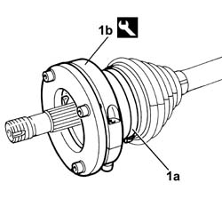

2710A30 INTERMEDIATE DRIVE SHAFT - R + R WITH R/H DRIVE SHAFT REMOVED
- Path
- Procedures > 27 AXLE > 2710 FRONT AXLE > 2710A DRIVE SHAFTS AND JOINTS > 2710A30 INTERMEDIATE DRIVE SHAFT - R + R WITH R/H DRIVE SHAFT REMOVED
- Kind
- repair procedure (removal / refitting; the operation number is the code)
- Applies to
- all engines; all production periods
- Interactive page
- https://sloeber94.github.io/elrnDB-fDct/en/#/244001064
Applies to: all engines; all production periods
 Removing
Removing
 Refitting
RefittingDismantle the intermediate driveshaft from the right driveshaft at the bench.
Applies to: all engines; all production periods
Refitting
RemovingReassemble the right driveshaft - intermediate driveshaft assembly.
1. Fit and new boot and band (1a) securing it to the differential internal driveshaft using the tool (1b).
Description | Code | Function | |
|---|---|---|---|
1b | Caliper | 1.870.857.000 | Constant velocity joint gaiter installation |
